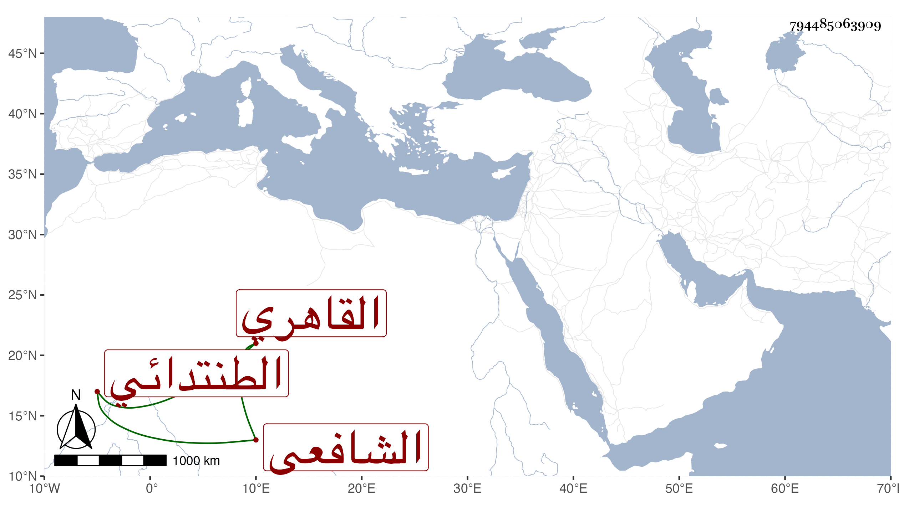

0902Sakhawi.DawLamic.ITO20230111-ara1.EIS1600.794485063909
Biography ID: 794485063909
إبراهيم بن أحمد بن عبد الرحمن بن عوض الطنتدائي الأصل القاهري الشافعي الآتي أبوه وأخوه عبد الرحمن لم يكن ممن سلك طريق والده ولا قريبا منها بل كان متصرفا بأبواب القضاة وبيده نصف أمامة الرباط بالبيبرسية حتى مات قريبا من سنة ثمانين عفا الله عنه .
